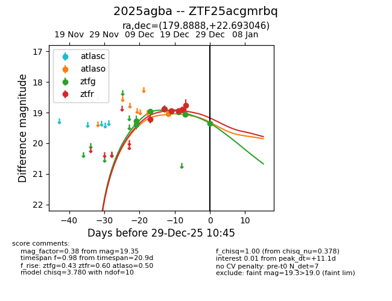
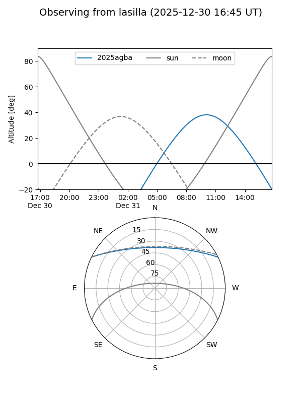
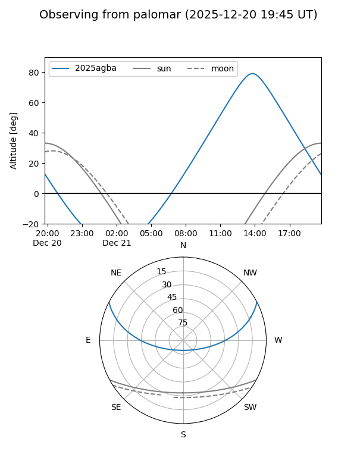
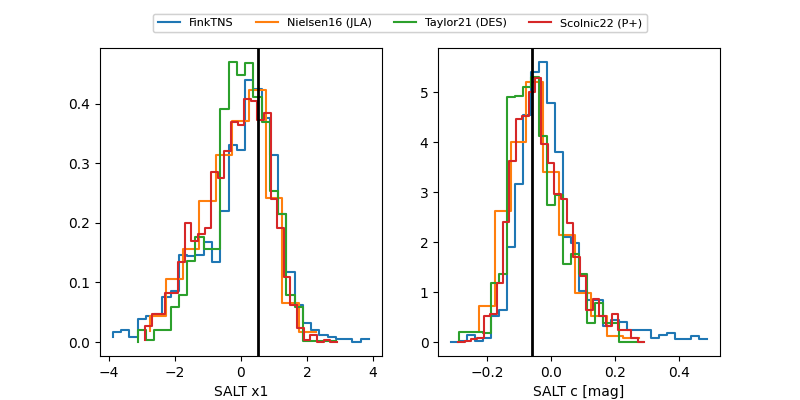

2025agba
Target 2025agba at 2025-12-31 16:59
Aliases and brokers:
FINK:
Lasair:
ALeRCE:
TNS:
YSE:
alt names
ZTF25acgmrbq (ztf,fink_ztf)
2025agba (tns,yse)
Coordinates:
equatorial (ra, dec) = 179.8888,+22.69305
equatorial (HMS+DMS) = 11:59:33.30,+22:41:34.96
galactic (l, b) = (230.7602,+77.43643)
Flags:
Photometry:
last atlaso=19.04, ztfg=19.35, ztfr=19.13
1 atlaso, 8 ztfg, 7 ztfr detections
Lightcurve

Visibility


Additional plots
